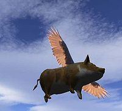
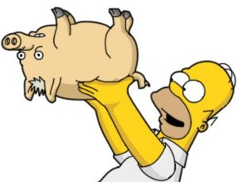

Cerdo volador
 De: La Frikipedia, la enciclopedia extremadamente seria.
De: La Frikipedia, la enciclopedia extremadamente seria.
| De la serie animales y otros bichejos:
|
| 
|
| Foto tomada por un aficionado que logró ver y capturar al cerdo volador antes de explotar
|
|
| Nombre común:
|
Cerdo violador
|
| Nombre científico:
|
Cerdum Voladoris
|
| Especie:
|
Antropócopros
|
| Subespecie:
|
Paquirrín
|
| Alimentación:
|
Heces voladoras
|
| Apariencia:
|
Vuela a la vez que defeca
|
| Hábitat natural:
|
Granjas flotantes
|
| Localización:
|
Aquí mismo y allí también
|
| Número aproximado de ejemplares:
|
Infinitesianimal
|
| Fecha de extinción:
|
Está por ver
|
| Pokemonización:
|
Ash "de la guitarra" Ketchum
|
Este extraño aminal, es por mucha gente considerado un Dios. La mayoria de la sociedad lo cree un mito ya que toda persona que lo ve explota en el instante. La procedencia de este animal es aún desconocida, pero este articulo basado en inventos de una mente jodida hechos reales les despejará todas sus dudas (quizá no) sobre este ser sobrenatural, extraño y sexy animal.
Su origen
- Sobre su origen hay muchas teorias, aqui nombramos las más
pelotudas aceptadas en la comunidad científica:
- Un horrible amorio entre una paloma y un cerdo (¿No era obvio?)
- Un cerdo caminaba por una planta nuclear cuando
el muy imbecil chocó contra un barril derramando desechos radioctivos sobre él
- Producto de experimentos en el Área 51
- Creación de Chuck Norris
- Una relacion fugaz entre el famoso gato volador y un... adivinen... ¡Sí! un cerdo
Su historia
- Gracias a todos los estudios que se han realizado sobre este animal se sabe que fué el primer mamífero alado sobre la tierra. Él partió en un
prostibulo circo mostrandose como fenómeno, consiguió la inmortalidad engañando a Satán (nadie está seguro de cómo) y es sumamente peligroso por los poderes que este le entregó. Se comprobó que el creó la gripe porcina al follar con un imbécil desesperado estornudar sobre un grupo de mexicanos, también fue el culpable de la caída de las famosas torres gemelas, fue la causa de la caida de los mayas, y se pronostica que será la causa del fin del mundo en el 2012. En caso de no ser así, lo veremos jodiendo volando más adelante (Si es que son parte del 0,99% de la población que no explota al verlo). Se dice que el final de este animal depende de Chuck Norris (¿O el final de Chuck Norris depende de este chancho cerdito? Ya lo veremos)
Familia
- No se pudieron recolectar muchos datos sobre su
¿piara? familia, pero los más destacados fueron:
- Los 3 cerditos; Primos lejanos que juntos no llegan a tener ni un 1% de la inteligencia de este ser increíble. ¿Por qué creen que el lobo se los
folló comió?
- Porky; El
estúpido ta-ta-tar-tartamudo primo de nuestro Dios alado, quedó así después de un encuentro muuuuy cercano con él. (Se desconocen los hechos, pero las consecuencias son evidentes) Y eso es to-to-to-todo amigos!
- Puerco araña; Se hizo famoso por los Simpsons, pero nadie es mejor que el cerdo volador. Tuvieron una gran pelea, y por eso ahora se tienen algo de odio. Pero la familia es la familia
LAMENTABLEMENTE.
 Puerco araña. Semi enemigo
- Peggy; Esta
chancha linda cerdita, ha estado caliente interesada en él desde que lo vió. Asegura que no le importa que sea su primo, mientras la lleve a ver las estrellas de cerca. No dudamos en que así será...
- Chuckles el cerdito; El primo "malvado" del cerdo volador. Tampoco tiene un alto coeficiente intelectual, porque siempre fallan sus planes. (Se rumorea que tiene cierta tendencia
gay homosexual... Si no me creen, pregúntenle a ese tipo que se hace llamar bárbaro; Dave).
- Piglet; Este es el primo MÁS
GAY COBARDE de todos. Es amiguito de Winnie de Pooh, y se esconde de cualquier cosa/persona/objeto que esté cerca. (No es necesario decir que nuestro Dios alado se siente profundamente ofendido cuando le dicen que son familiares)
- Hamn; ¿Quién es? El cerdito que aparece entre medio de vaqueros y diversos juguetes. ¿Qué hace? Absolutamente nada (No sé por qué lo mencionamos... Da igual).
Víctimas
- Aquí mencionamos algunas de las millones de víctimas de este extraño ser.
|
- El tipo que tomó la foto.
- PO (Kungfu Panda... RIP)
- Teletubbies
- Jigsaw
- Pájaros dodo
- John Lennon.
- Jack el Destripador (¿O era él?) O_O
- Slash
|
- Tu mamá (Lo sentimos, de verdad)
- Hitler (¿Creíste que se había suicidado?)
- Shakespeare.
- Los dinosaurios (Por él no los conocimos)
- Elvis Presley
- Tzu (No, no lo conoces... Pero te está mirando ahora)
- Al jóven manos de tijeras
|
- Michael Jackson (¿Realmente crees que fue su doctor?)
- Barney
- Marilyn Monroe (Este Dios la obligó
- La esponja gay (Mientras dormía con su amante Patrico)
- Abraham Lincoln
- Satán
- Tu ex (Se lo agradecerás)
|
|
Enfermedad del cerdito volador
Esta enfermedad la causa cuando el cerdito no sabe que lo miran (lo cuál es casi Imposible por que tiene 17 sentidos) los sintomas empiezan después de una semana de haberlo visto, estos son:
- tener alusinaciones, normalmente se observa musica y se escuchan colores
- horribles ganas de practicar Zoofilia, es decir ganas de follar con los animales (¿muy directo?, pues mala suerte)
- vomitar sangre, llorar sangre, que te salga sangre por lo oidos, boca y nariz, sudar sangre, cagar sangre, mear sangre... ¿olvide algo con sangre?
- ver al cerdito en el baño... ¿eso no era en alucinasiones?
- la caida del pelo
púbico de la cabeza
- mutaciones
- la sensacion de poder volar (no se recomienda lanzarse de algún edificio... aunque...)
- por último
tus bolas tu cabeza explotará
Cura
- Si este animal te a contagiado con la enfermedad del cerdito volador estas
cagado perdido pues no existe cura, pero siempre está la opción de ir donde el doctor Gregory House que experimentara contigo, te hará sentir como basura y luego te dejará morir
Autor(es):
- Fordus
- Natasha
- Bladguer
- Nikol
- El príncipe de las tabernas
- Genericool
- Alexelyeyo
- Juansimat
- Kobon
- Pulmocalcium
Frikipedia 2005-2016, Licencia
GFDL 1.2 - Extraído por FrikiLeaks